جمعية أهلية رائدة بنجع خميس تهدف لتحسين جودة الحياة من خلال التنمية والابتكار.
أن نصبح المركز الأول للتحول الرقمي والخدمات التكنولوجية في صعيد مصر.
تمكين الشباب والمرأة وتوفير الحلول التقنية الحديثة لكل فئات المجتمع.
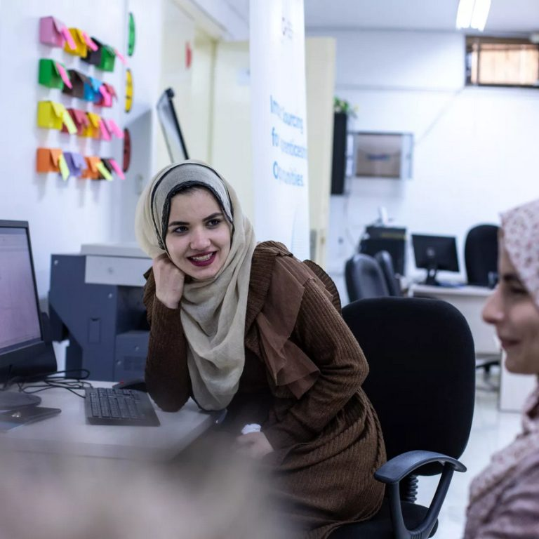
مشروع "زهرات رقميات" ممول من PPI ضمن مشروع مشاركة المجتمع المدني نحو التنمية المستدامة بمصر. ويهدف إلي رفع المهارات الرقمية لدى الفتيات والنساء ورفع الوعي الرقمي بالمجتمع ونشر ثقافة الاستخدام الآمن للإنترنت، وخلق قدوات كنماذج ناجحة في مجال تكنولوجيا المعلومات.
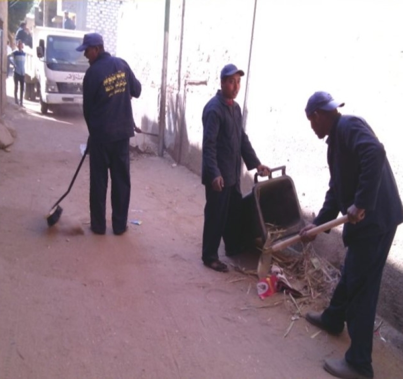
مشروع ممول من الصندوق الاجتماعي للتنمية بمنحة من الاتحاد الأوربي. ويهدف الي تشغيل الشباب فى مبادرات تحسين الوضع الصحى والبيئى للارتقاء بالحالة الصحية فى المجتمعات المستهدفة.
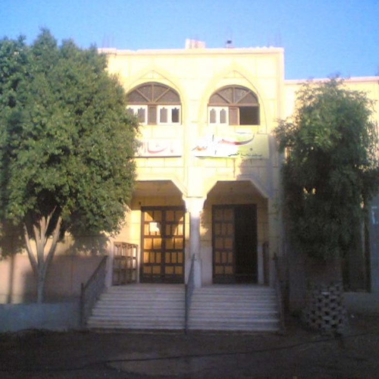
تم إنشاء المجمــع الإسلامى بالتعـاون مع أهل الخير بالقرية بتكلفة 257.000 جنيه مصري. ويضم المجمع مسجد ومصلى نساء ومبنى الجمعية.
مشروع توصيل مياه الشرب للمنازل. مشروع الصرف الصحي منخفض التكاليف. مشروع الرعاية الصحية لأسر شريحة العمالة الغير منتظمة بالقرية. استفاد من المشروعات 147 أسرة بإجمالي تكلفة 130 ألف جنية.
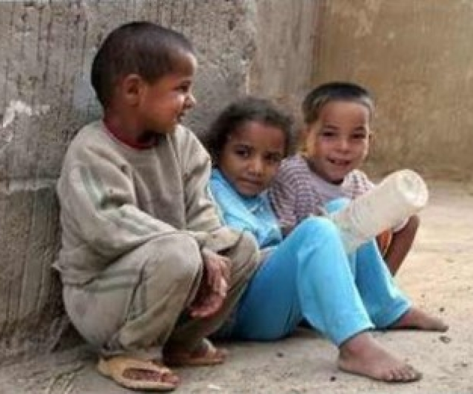
بالتعاون مع البنك الدولي والاتحاد الاوروبي قامت الجمعية بحصر الطلبة وإعادة تهيئتهم للدخول فى الدراسة من جديد بتوفير الملابس والمصروفات. تم تنفيذ المشروع بالتعاون مع مدرسة النصر والعبور والندافين الابتدائية. استضافة مدرسة من ذات الفصل الواحد بمقر الجمعية واستكمال تنفيذ المشروع بالتعاون مع (البروج – العبابدة ) تم إنشاء صندوق التكافل من أجل التعليــم والذى يقوم على جمع التبرعات من الأهالى لإنفاقها فى مكافحة التسرب من التعليم.
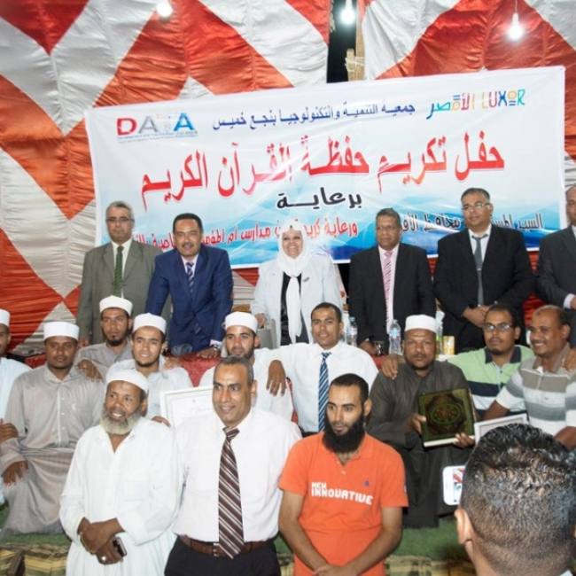
تقوم الجمعية برعاية ثلاث مكاتب لتحفيظ القرآن الكريم وعمل احتفالية سنوية لتكريم الحفظة. تم تكريم 400 شاب وفتاة من عام 2005 حتى عام 2010.
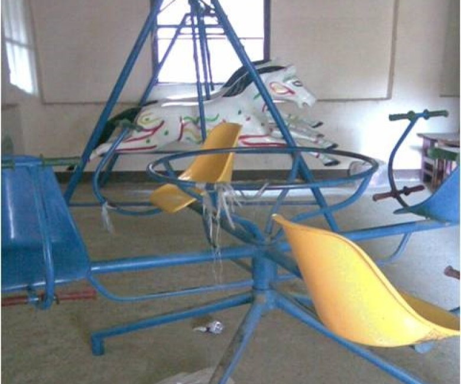
تم تطوير دار الحضانة بتمويل من الصندوق الاجتماعى للتنمية ومديرية التضامن الاجتماعى بالأقصر بتكلفة 26,000 جنيه مصري. توفر دار الحضانه فرص عمل للفتيات وتحتوى على قاعات وألعاب تعليمية.
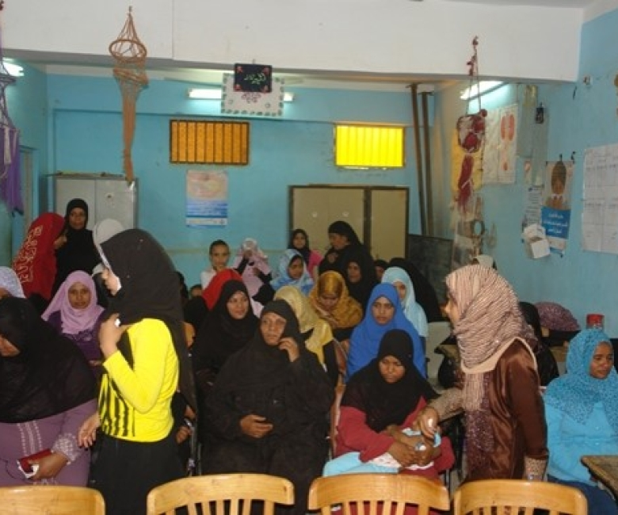
روع تنمية المرأة الريفية مشغل للفتيات بالإضافة إلى أعمال حرفية ويدوية. كما يتم عقد ندوات توعية للفتيات.
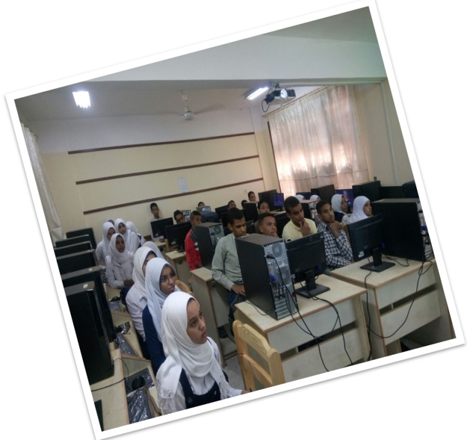
مبادرة اطلقتها الجمعية ضمن فاعليات احتفالها باليوبيل الفضى (25 عام) على بدء مسيرتها فى تنمية المجتمع بكافة كياناته وفئاته. تهدف إلى رفع الوعى لدى الأطفال والشباب وأولياء الأمور بأهمية وكيفية استخدام الإنترنت بشكل آمن.
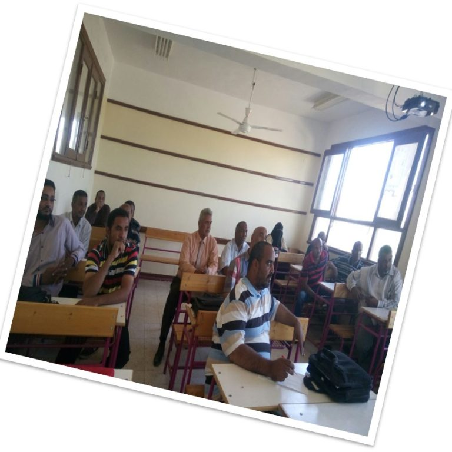
تم إطلاق مبادرة كلاود فى شهر أكتوبر 2017 . وتم تنفيذها فى مركز الطود – محافظة الأقصر ومن المستهدف تنفيذ المبادرة فى جميع مراكز المحافظة وعلى مستوى جمهورية مصر العربية. وتهدف المبادرة الي هدم الفجوة الرقمية بين الجيل الحالي المتنقن لأدوات التكنولوجيا والأجيال السابقة. وخلق شباب مؤهل لسوق العمل فى مجالات مختلفة باستخدام تكنولوجيا المعلومات.
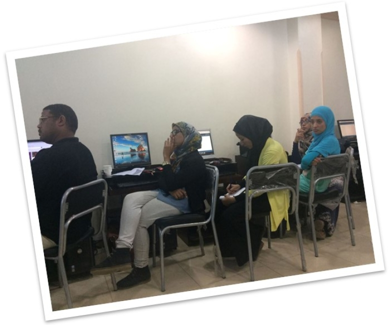
عام 2017 تم اعتماد داتا نجع خميس لتصبح أكاديمة سيسكو تابعة للجهز المركزى للتعبئة العامة والإحصاء. تم تدريب واعتماد 10 مدربين من داتا نجع خميس كمدربين لمناهج سيسكو.
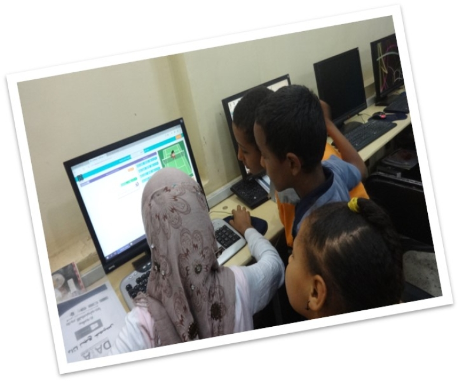
مبادرة تهدف إلى تعليم وتمكين النشئ بدءً من سن 7 سنوات وحتى 18 عام من ادوات تكنولوجيا المعلومات التى تجعلهم قادرين على ان يكونوا منتجين وليس مستخمين فقط لأدوات التكنولوجيا..
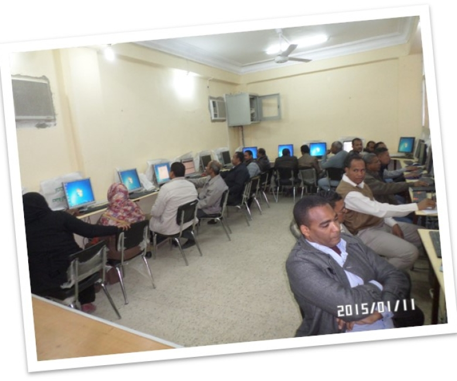
عام 2015 تم الاتفاق مع وزارة الاتصالات والجهاز المركزي للتعبئة العامة والإحصاء لتوفير أكثر من 84 تدريب مجاني للعاملين بالدولة. تم تدريب وتأهيل 200موظف على عدة برامج تدريبية مجانا حتى الان.
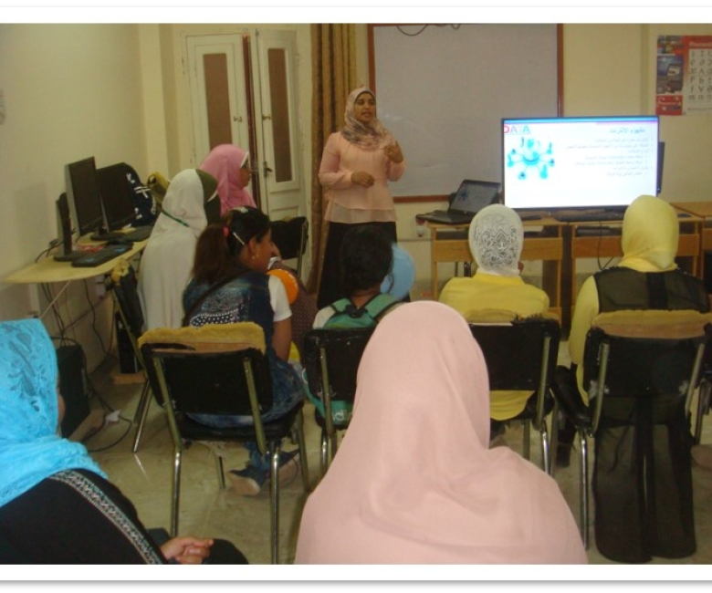
من عام 2015 وحتى عام 2018، تم الاحتفال باليوم العالمي للفتيات في قطاع تكنولوجيا المعلومات والاتصالات، وهو حدث يهدف إلى مساعدة الفتيات والشابات على النجاح في المهن المتعلقة بالعلوم والتكنولوجيا والهندسة والرياضيات (STEM). إذ يتعين عليهن اكتساب المهارات اللازمة ليصبحن مستخدماتٍ ومبدعاتٍ في العالم الرقمي. وفي كل عام، يعمل الاتحاد الدولي للاتصالات (ITU) على إلهام الفتيات وتشجيعهن على السعي نحو مستقبلٍ أفضل في مجال تكنولوجيا المعلومات والاتصالات، وتمكينهن من خلال ضمان حصولهن على المهارات والثقة والدعم اللازمين لتحقيق أهدافهن.
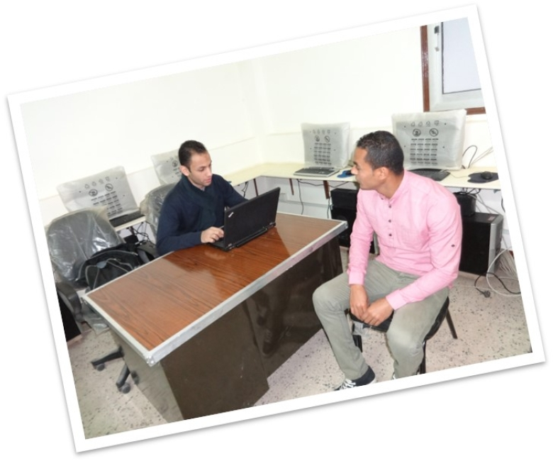
في عام 2015 تم التعاقد مع الصندوق المصرى لتكنولوجيا المعلومات وشركة ميكروسوفت لإعداد مدربين معتمدين فى مجال تكنولوجيا المعلومات. تم تدريب وتأهيل 15مدرب فى مجال تكنولوجيا المعلومات معتمدين من قبل شركة ميكروسوفت ضمن مبادرة كل مصر على النت. وايضاً تم تدريب 300 متدرب فى أساسيات الكمبيوتر وحصلوا على شهادة معتمدة من شركة ميكروسوفت.
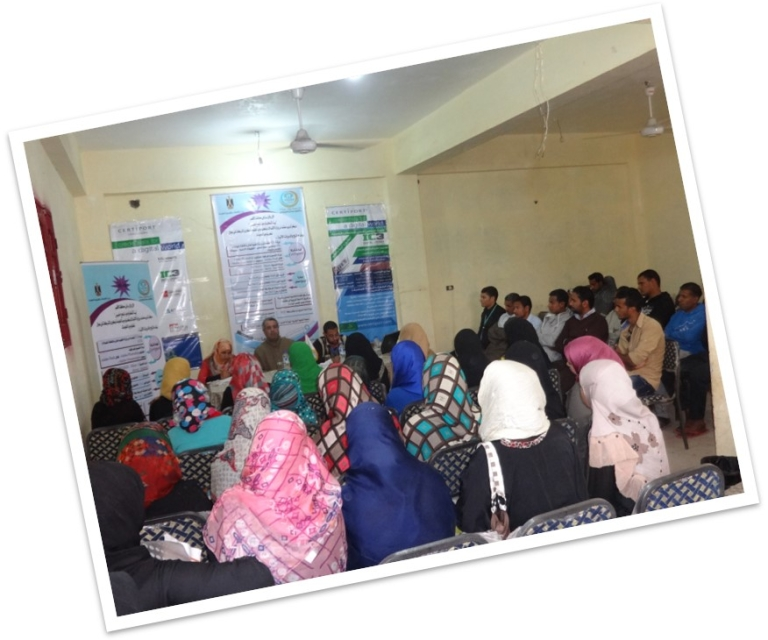
عام 2015 تم اعتماد بيت التكنولوجيا ليصبح إحدى مراكز علوم الحاسب التابع لمعهد تكنولوجيا المعلومات كأول جمعية يتم اعتمادها على مستوى المحافظة. تم تدريب وتأهيل 12 مدرب فى مجال تصميم المواقع معتمدين من معهد تكنولوجيا المعلومات ITI ووزارة الاتصالات.
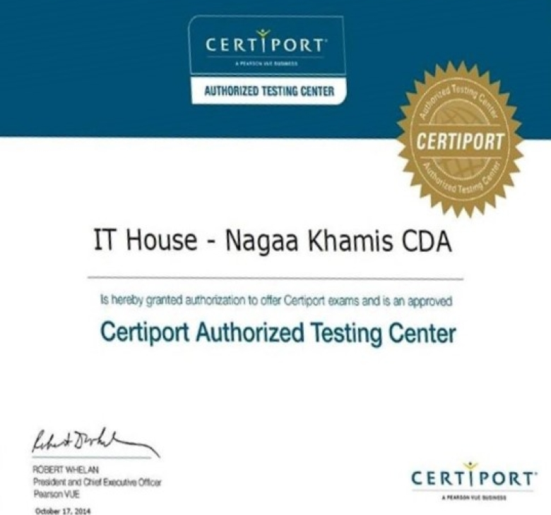
في عام 2014 تم التوقيع على التعاقد الخاص باعتماد بيت التكنولوجيا لتقديم جميع الشهادات الخاصة بشركة CERTIPORT وتم توفير عدد 11 تدريب وامتحان متخصص بشهادات دولية فى مجال تكنولوجيا المعلومات .
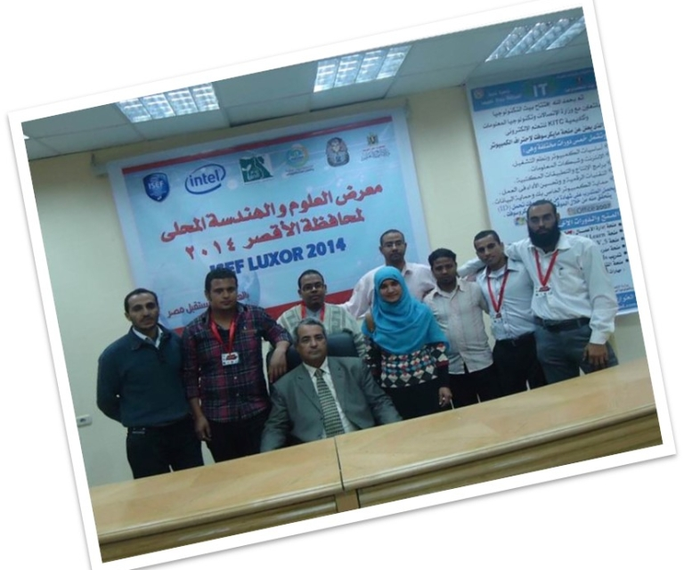
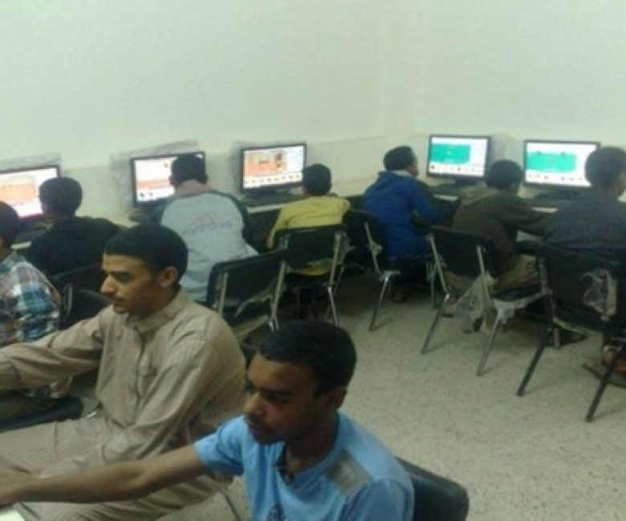
عام 2013 تم اعتماد بيت التكنولوجيا ليصبح أكاديمية اوراكل لتدريب الشباب على البرمجة . تم تدريب عدد 24 متدرب على البرمجة بلغة الجافا وتم تكريمهم من قبل سكرتير عام المحافظة و مستشار وزير الاتصالات د / أحمد درويش بقاعة المؤتمرات الدولية بالأقصر.
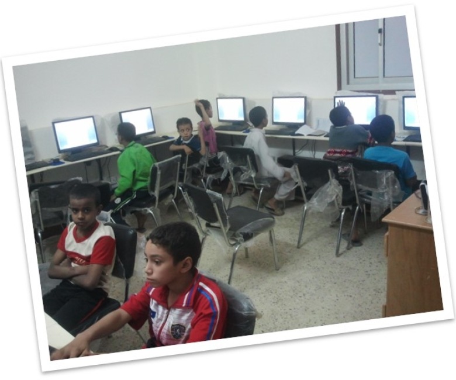
في عام 2013 تم تدريب للاطفال على أساسيات الكمبيوتر بطريقة تعاونية شيقة تنمى لديهم روح الفريق ومشاركة المعلومات ضمن برنامج Intel Learn Program بيت التكنولوجيا بجمعية نجع خميس هو بيت التكنولوجيا الوحيد على مستوى محافظة الاقصر الذى يقدم هذا التدريب. حيث تم تدريب عدد 40 طفل (ذكور - إناث).
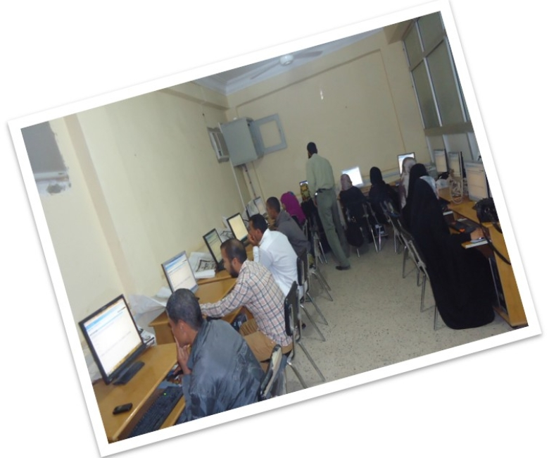
في عام 2012 قام نادي التكنولوجيا بعمل شراكة مع شركة ميكروسوفت – مكتب الولايات المتحدة الامريكية لتقديم تدريب الأساسيات اللازمة لاستخدام الكمبيوتر Microsoft Digital Literacy وقد حصلت الجمعية على موافقة من الشركة بتقديم التدريب بمقابل مادى بسيط. تم التعاقد مع جمعية رعاية المعلمين بالدير بمدينة إسنا ، جمعية تنمية المجتمع بدراو فرع الأقصر و مكتبة مصر العامة بالأقصر لتقديم التدريب تحت إشراف نادي التكنولوجيا بنجع خميس. وتم تدريب وامتحان عدد 200 متدرب.
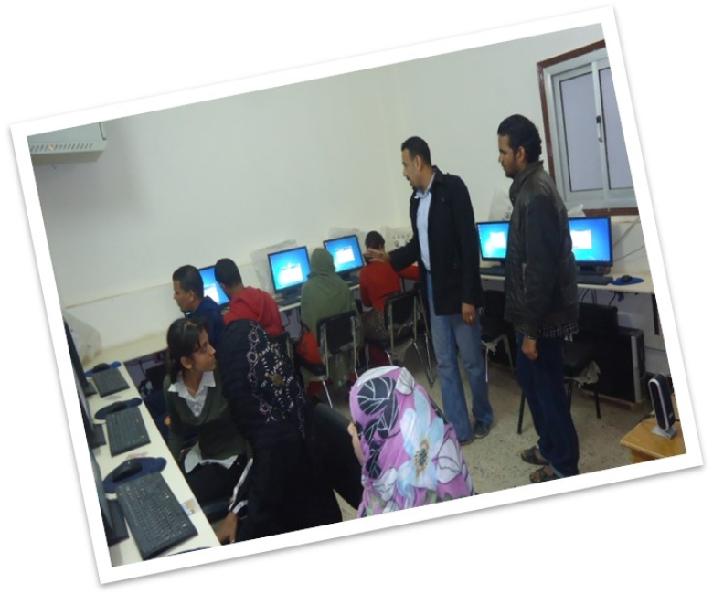
01145029933 / 01114470448
نجع خميس، العديسات قبلي، الأقصر
info@datank.com